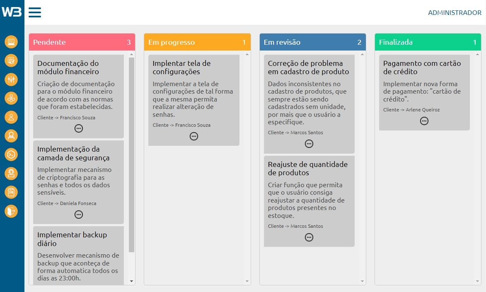
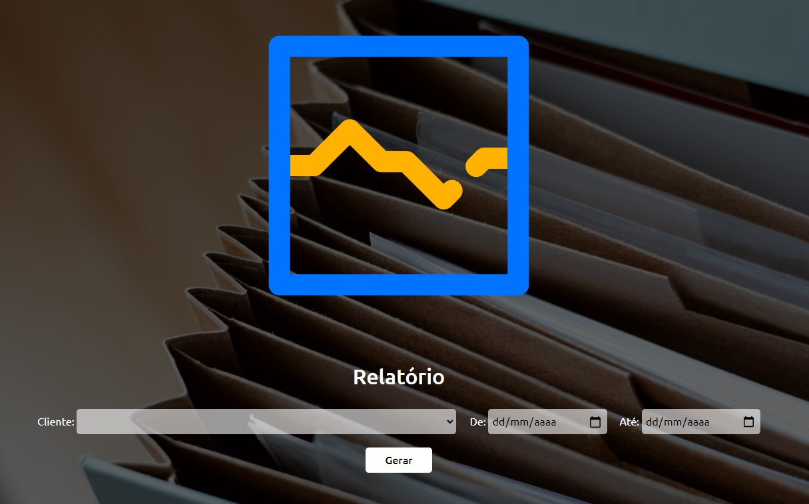
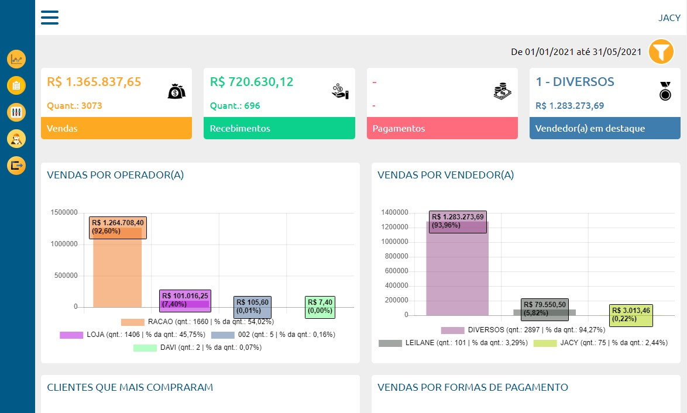
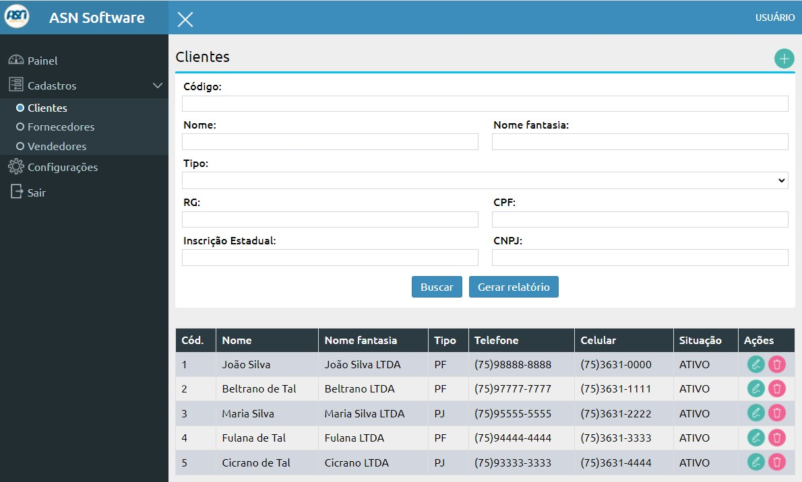
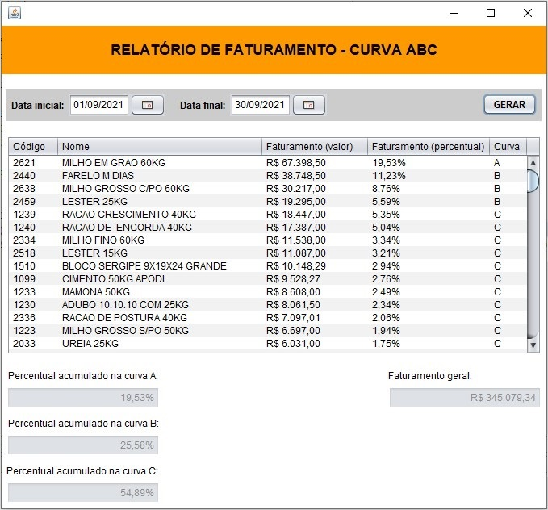

Analista de Sistemas / Desenvolvedor Web Full Stack Pleno Professor
Projetos/Trabalhos Mais sobre mim
Gestor de tarefas com design responsivo criado para administrar os afazeres relacionadas ao desenvolvimento de softwares em empresas do ramo de TI.
É importante salientar que o foco deste projeto foi mais direcionado para a camada Back-End. Dessa forma, a parte visual poderá ser melhor trabalhada nas
próximas versões.
Tecnologias utilizadas: Java; Spring Data JPA, Spring Security e vários outros recursos do ecossistema Spring; banco de dados MySQL; Jaspersoft Studio;
Thymeleaf; HTML; CSS; Javascript.

Página web com design responsivo criada para gerar relatórios. Ela foi feita para uma empresa de software do ramo de gestão empresarial.
Vale ressaltar que os dados (logotipo, nome e outros) da empresa (cliente) em questão foram removidos por uma questão de segurança e privacidade.
Tecnologias utilizadas: Java; Spring Data JPA e outros recursos do ecossistema Spring; banco de dados MySQL; Jaspersoft Studio; Thymeleaf; HTML; CSS;
Javascript.

Dashboard com design responsivo criado para gerenciar informações sobre vendas. Ele foi feito para uma empresa de software do ramo de gestão empresarial.
Vale ressaltar que os dados (logotipo, endereço de e-mail, número de telefone e outros) da empresa (cliente) em questão foram removidos por uma questão de
segurança e privacidade.
Tecnologias utilizadas: Java; JSP; JDBC; MySQL; HTML; CSS; Javascript; ChartJS.

Projeto Front-End criado para a empresa ASN Software. Nesse projeto foi desenvolvido um design inspirado em alguns outros exemplos de sistemas ERP WEB.
Algumas páginas, como a "painel.html", ficaram sem conteúdo por causa do escopo do próprio projeto. Tudo foi feito de acordo com as exigências da ASN
Software.
É possível navegar pelo layout para conhecê-lo de forma dinâmica. Nos campos de usuário e senha da página de login é preciso digitar qualquer valor apenas
para validar a "presença" de dados. A partir disso é possível clicar no botão "Entrar" para acessar a página painel, assim como as outras. Vale ressaltar
que essa navegação dinâmeica só foi implementada para facilitar a apresentação do layout.
Tecnologias utilizadas: HTML, CSS e Javascript.
Layout WEB resonsivo criado para a empresa RM Studio.
Tecnologias utilizadas: HTML, CSS e Javascript.

Projeto criado para integrar um dos sistemas desktop da empresa ASN Software. Trata-se de uma aplicação responsável por classificar os produtos vendidos,
considerando os valores faturados como critério, de acordo com a curva ABC.
Tecnologias utilizadas: Java; Java Swing; JDBC; MySQL.
Profissional com sólida base acadêmica em Análise e Desenvolvimento de Sistemas e pós-graduação em Java, possuindo vasta experiência no desenvolvimento de sistemas web escaláveis, integração de serviços complexos e metodologias ágeis (Scrum). Possuo histórico comprovado na redução de latência de sistemas e automação de processos através de APIs. Destaco-me pela facilidade em aprender novas tecnologias de forma autodidata e pela habilidade de comunicação, tendo atuado como professor universitário.
Sou participativo, estou sempre pronto para o trabalho e para ajudar na melhoria dos processos da instituição em questão.
Possuo experiência com as seguintes tecnologias:
Veja por onde passei, descubra os locais onde tive oportunidade de trabalhar e/ou estudar.
10/2022 - 07/2023
Curso de pós graduação (especialização Latu Sensu) focado em JAVA e seu ecossistema.
01/2023 - 12/2023
Graduação focada em preparar professores capacitados para lecionar a disciplina de Matemática em diversos níveis educacionais.
08/2016 - 12/2018
É importante saleintar que, por ter sido o melhor aluno da turma, recebi o certificado de Láurea Acadêmica.
Atual desde 06/2026
02/2022 - 01/2025
08/2023 - 08/2025
01/2020 - 01/2022
06/2019 - 01/2020
10/2018 - 02/2019
Santo Antônio de Jesus
Bahia
Brasil
wanclaybarreto@gmail.com
(+55) 75 981459012